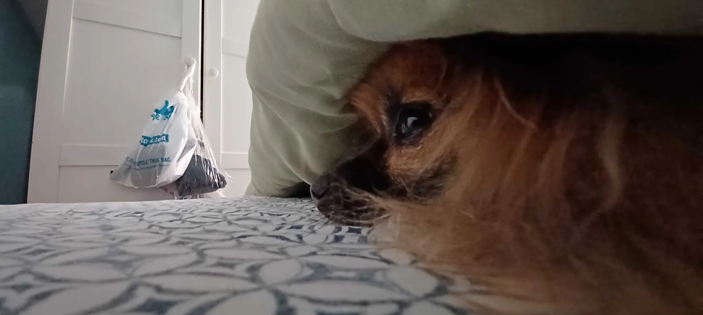
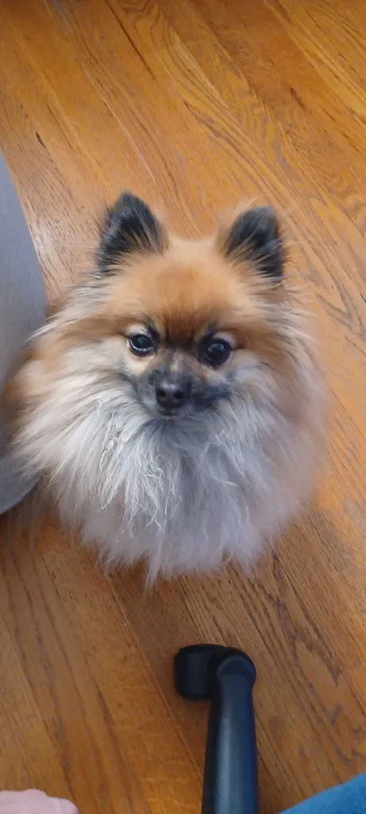

This website has three pages, My home page, professional resume, and a page about my hobbies. Each page has images, a form of media and all written with just HTML with no CSS.
My name is Andy Ly, and I am a second-year Applied Cybersecurity and IT major at Illinois Tech. My favorite subject currently is networking because I find the hands-on portions of networking to be extremely fun and interesting. It is also the subject I am most confident in and enjoy the most.
These are pictures of my dog! His name is bear and he is a pomeranian, about 2 years old and he is extremely spoiled. Fun fact! Pomeranians despite their small size actually used to be sled dogs believe it or not! Their ancestors used to weight much more and much larger as well compared to todays modern counter part. I have even seen/heard my dog howl before, it is very funny to see him howl. He knows a lot of tricks that we taught him at a young age. He is a very smart dog although he also very sassy and loud when he doesn't get what he wants. He knows how to sit, give paw, fetch, lay down, and more. He even knows how to walk up and down the stairs. I don't allow him walk up/down the stairs when im not around however because of the chance of him falling. He hasn't fallen yet but I am not risking that chance.

